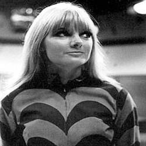

| Home | The Doctors | The Companions | The Villians |
|
|||
Polly Polly, sometimes called Polly Wright in spin-off material, is a fictional character played by Anneke Wills in the long-running British science fiction television series Doctor Who. A young woman from the year 1966, she was a companion of the First and Second Doctors and a regular in the programme from 1966 to 1967. Polly appeared in 9 stories (36 episodes). The only serial featuring Polly which is currently complete in the BBC archive is her first, The War Machines.
|